Local-first
Collections, tabs and history live in your browser’s IndexedDB. Open the page and you’re working — no account, no server round-trip.
Curlion is a fast, browser-based API client. Import your cURLs and Postman collections, test endpoints, and clock out on time — without your laptop fans preparing for takeoff.
Paste a cURL into the URL bar · Ctrl/⌘ + Enter to send
Looking for a Postman, Insomnia, Bruno, Yaak, Thunder Client or Hoppscotch alternative? Curlion runs in your browser, with nothing to install. See how it compares.
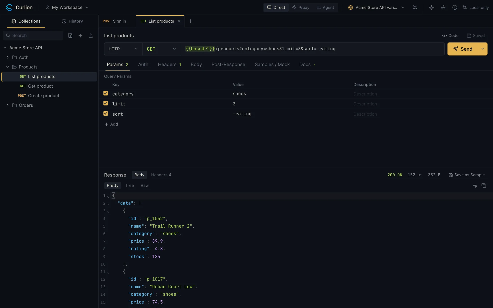
A lightweight alternative to the heavyweight clients, built for people who just want to send requests and see what comes back.
Collections, tabs and history live in your browser’s IndexedDB. Open the page and you’re working — no account, no server round-trip.
HTTP, GraphQL with a schema explorer, WebSocket, Socket.IO and gRPC — all in the same tabbed workspace.
Call from the browser, route through the CORS proxy, or use the Agent on your computer to reach localhost and your local network.
Shared workspaces plus a private one of your own. Environments are shared; everyone keeps their own current values and tokens.
Import Postman v2.1 collections, paste a cURL straight into the URL bar, and export back to Postman whenever you like.
Green when defined, red when not. Click any {{variable}} to see or edit its value, and chain tokens with Post-Response extraction.
Publish a sanitized, read-only docs page from any collection, and turn saved responses into mock endpoints.
Sign-in only, admin-created accounts, row-level security, masked secrets, and credentials stripped from published docs.
A closer look at the parts that save the most time.
Defined variables glow green, missing ones red. Click one to edit its value without leaving the request.
$uuid, $timestamp and $randomEmail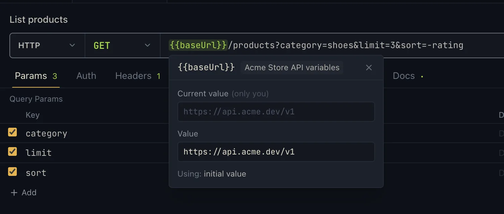
Switch a request between protocols from the URL bar and keep everything in the same collection.
.proto file, through the Agent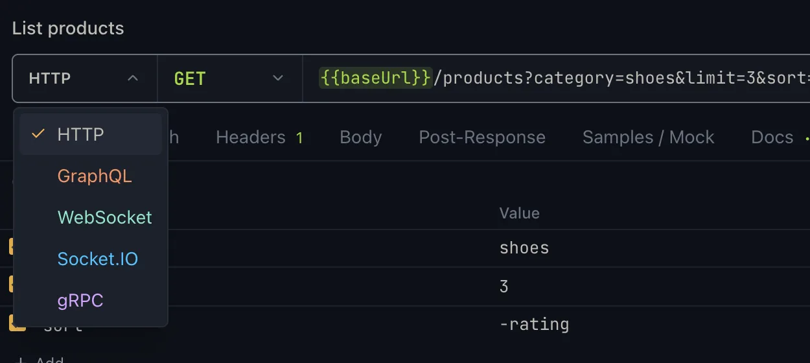
Copy exactly what you just sent as ready-to-run code, in the language your project uses.
{{name}}, so tokens never leak into a snippet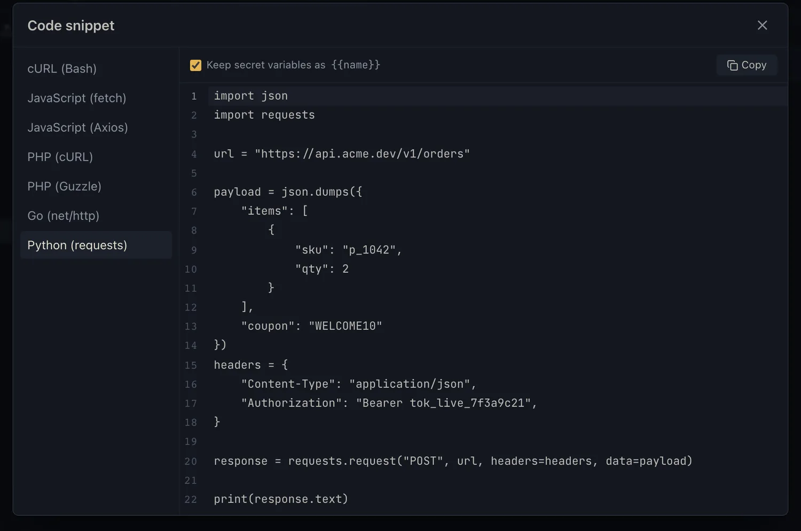
Drop a Postman Collection v2.1 file or paste a raw cURL. Folders, auth, bodies, saved responses and variables come along.
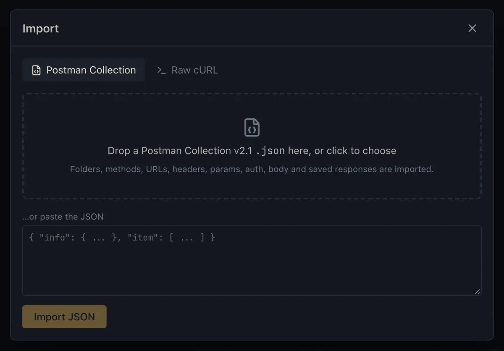
Every collection gets an overview with its requests by folder, a description, and one-click actions.
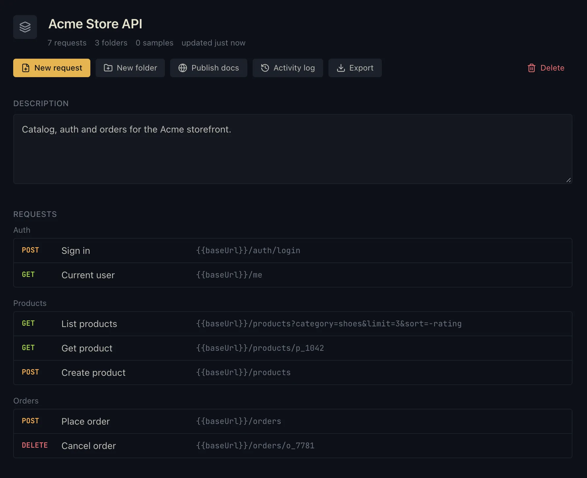
Publish any collection as a clean, read-only page. Literal tokens, passwords and API keys are replaced with placeholders before anything is shared.
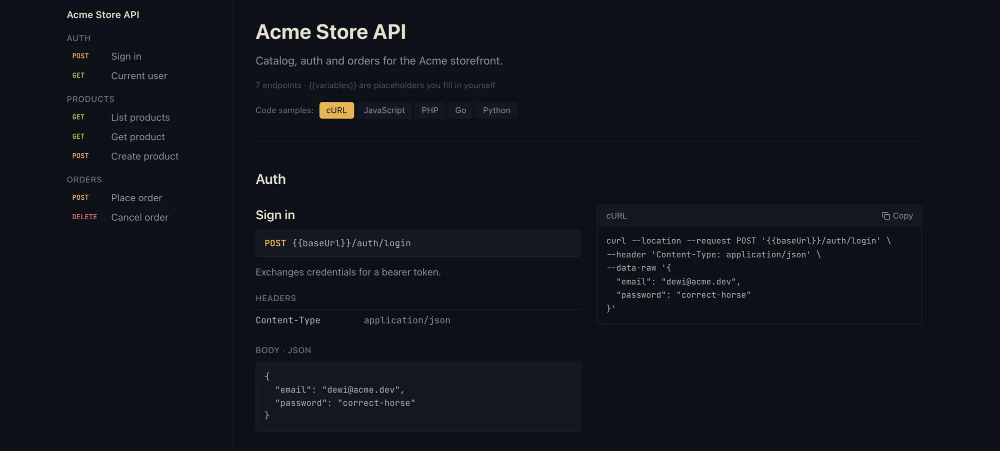
Ayu, Monokai, Dracula and Tokyo Night — each in a dark and a light variant, with matching code colors. Tune the font, size and indentation to taste.
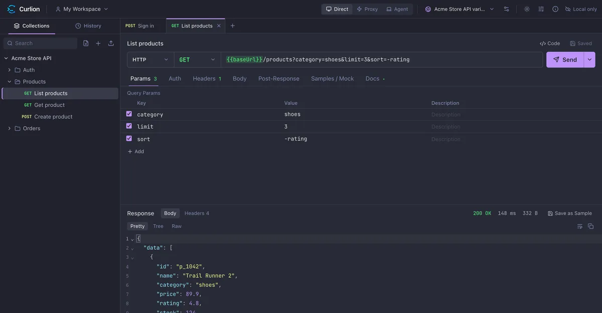
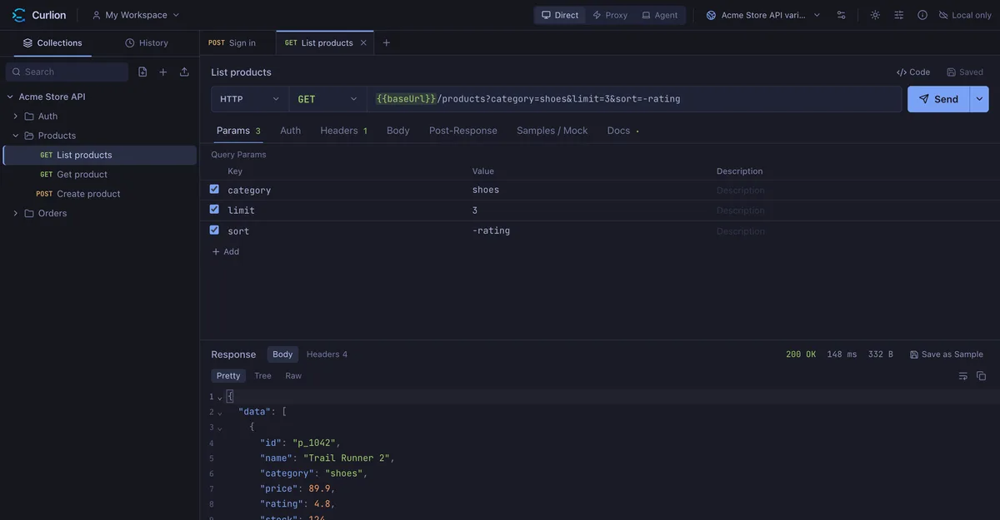
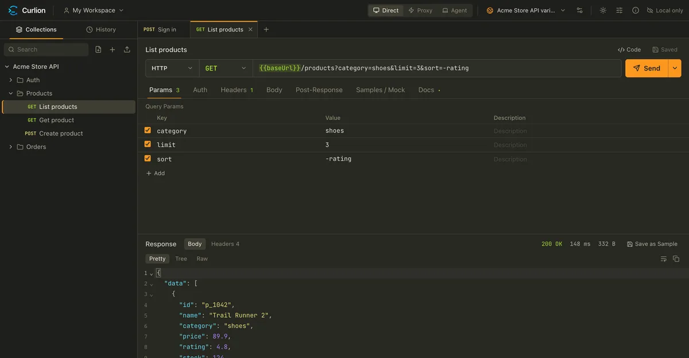
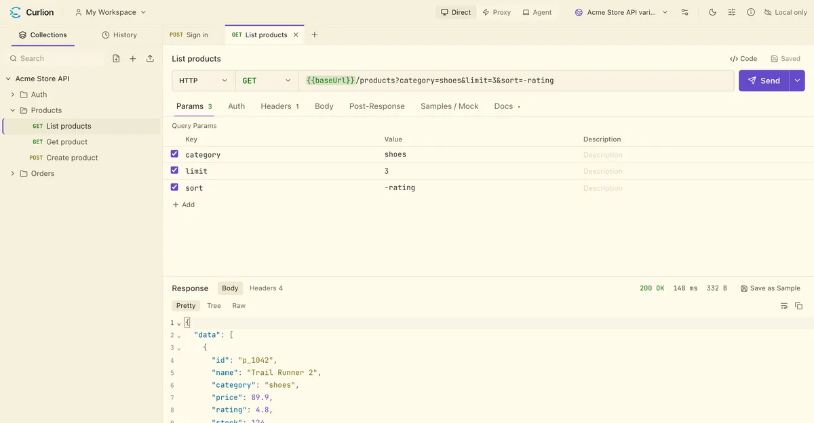
Curlion imports Postman Collection v2.1 files and raw cURL commands. If your current tool can export a Postman collection or copy a request as cURL, you can bring your requests across in minutes.
Import your Postman Collection v2.1 files (folders, auth, bodies, saved responses and variables) and keep working with environments, history and published docs. Pre-request and test scripts aren't supported, so use Post-Response extraction for token chaining.
Insomnia is a cross-platform desktop app. Curlion is a web app: open a tab and start sending requests, with nothing to install. Paste a cURL into the URL bar to bring a request over.
Bruno keeps collections as plain files on disk that you can commit to Git. Curlion keeps them in your browser, with optional team sync to a Supabase project you control. Pick the model that fits how your team shares collections.
Yaak is a desktop API client for REST, GraphQL, gRPC, WebSocket and SSE. Curlion covers REST, GraphQL, WebSocket, Socket.IO and gRPC in the browser, so there is no desktop app to install or update.
Thunder Client runs inside your code editor (VS Code and JetBrains IDEs). Curlion is a standalone web app that works in any browser, whatever editor you use.
Hoppscotch and Curlion can both be used in the browser, so the workflow will feel familiar. Curlion keeps data in IndexedDB by default, syncs to your own Supabase project for teams, and imports and exports Postman v2.1.
Postman, Insomnia, Bruno, Yaak, Thunder Client and Hoppscotch are trademarks of their respective owners. Curlion is an independent project and is not affiliated with or endorsed by them. Descriptions of other tools are summaries and may change; check each project for current details.
Curlion is still growing. Here’s what is planned, so you know where it’s heading.
Connect to a text/event-stream endpoint and watch events arrive live in the message log, next to WebSocket and Socket.IO, with the same variables, auth and headers you already use.
GET {{baseUrl}}/prices/stream
Accept: text/event-stream
event: price.updated
id: 42
data: {"sku":"p_1042","price":84.9}
Start on your own machine, then add a Supabase project and Netlify when your team joins in.
No setup and no account. Your data stays in this browser.
$ npm install $ npm run dev
Run one SQL file in a new Supabase project and set two environment variables.
supabase/schema.sql VITE_SUPABASE_URL VITE_SUPABASE_ANON_KEY
Static build plus edge functions for the CORS proxy and mock endpoints.
$ npm run build # publish dist/
Curlion covers the everyday Postman workflow: collections and folders, environments and variables, auth, request bodies, a response viewer, history, tabs, cURL and Postman import/export, code snippets and published docs. It runs in the browser and stores data locally by default. It does not run Postman's pre-request and test scripts (they are skipped on import); Post-Response extraction handles token chaining. If your workflow depends on scripting, check that first.
Yes. Curlion imports Postman Collection v2.1 JSON, including folders, auth, bodies, saved responses and variables (variables become an environment). You can also paste a raw cURL command into the URL bar, and export any collection back to Postman v2.1 JSON.
Insomnia, Bruno and Yaak are desktop applications. Curlion is a web app: open a tab and start sending requests, with nothing to install. When you need to reach localhost or your local network, the optional Curlion Agent sends requests from your own computer.
If you like a lightweight GUI client but don't want it tied to your editor, yes. Thunder Client runs inside code editors (VS Code and JetBrains IDEs); Curlion is a standalone web app that works in any browser, whatever editor you use.
Both can be used in the browser, so the workflow will feel familiar. Curlion keeps your data in the browser's IndexedDB by default, can sync saved changes to a Supabase project you control for team workspaces, imports and exports Postman v2.1, and publishes read-only docs from a collection.
HTTP/REST, GraphQL (with a schema explorer), WebSocket, Socket.IO and gRPC. gRPC needs the Curlion Agent, which also lets any request reach localhost or a self-signed server. Server-Sent Events (SSE) testing is on the roadmap.
Curlion is designed to run on the free tiers of Netlify and Supabase, so hosting it for yourself or your team can cost $0. Running it locally only needs Node.js.
In local mode, collections, environments, tabs and history stay in your browser's IndexedDB. If you connect a Supabase project, saved changes sync to it, while each person's current environment values (such as tokens) stay in their own browser.
Open Curlion, paste a cURL and hit send. That’s the whole onboarding.